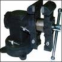
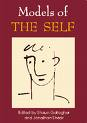

| FAST corners Corner detection using Ed Rosten's FAST algorithm | fishfood Stereo camera calibration utility | |
| memcompressor  Fast in memory data compression/decompression | pathplanner Path planning with A* | |
| selfopt  A genetic algorithm based optimiser | sentcore Core stereo vision, localisation and mapping classes | |
| utilities General utilities |